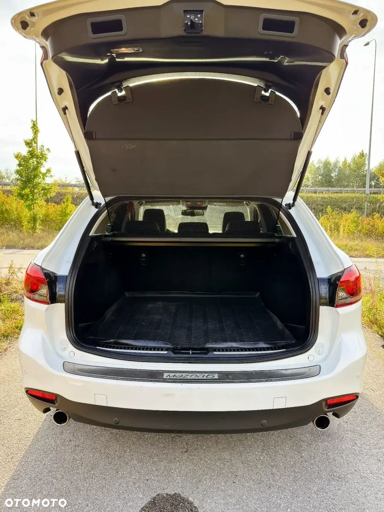
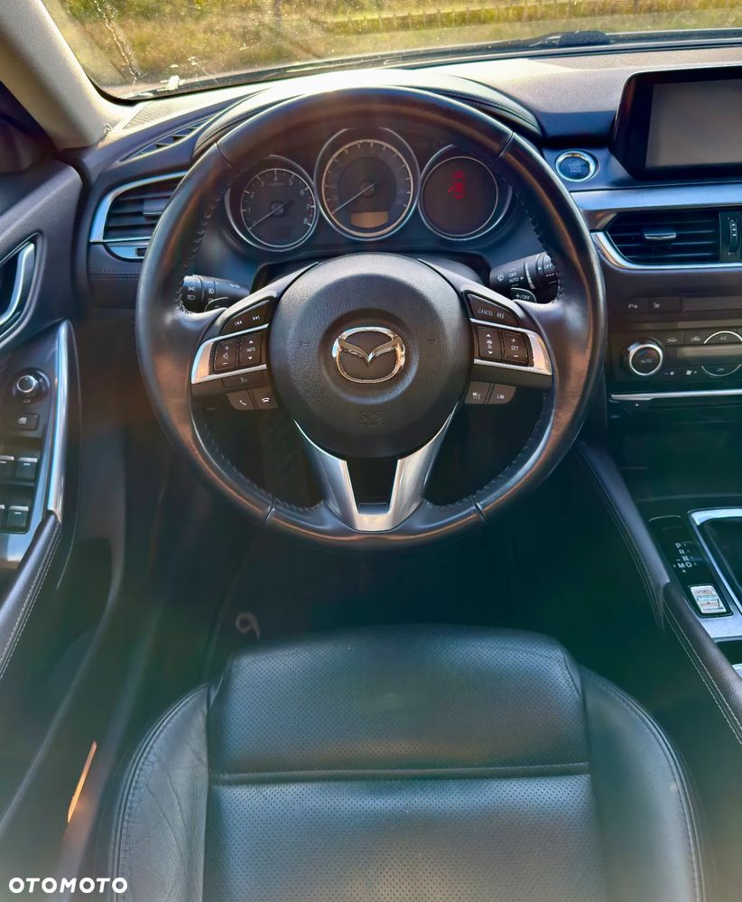
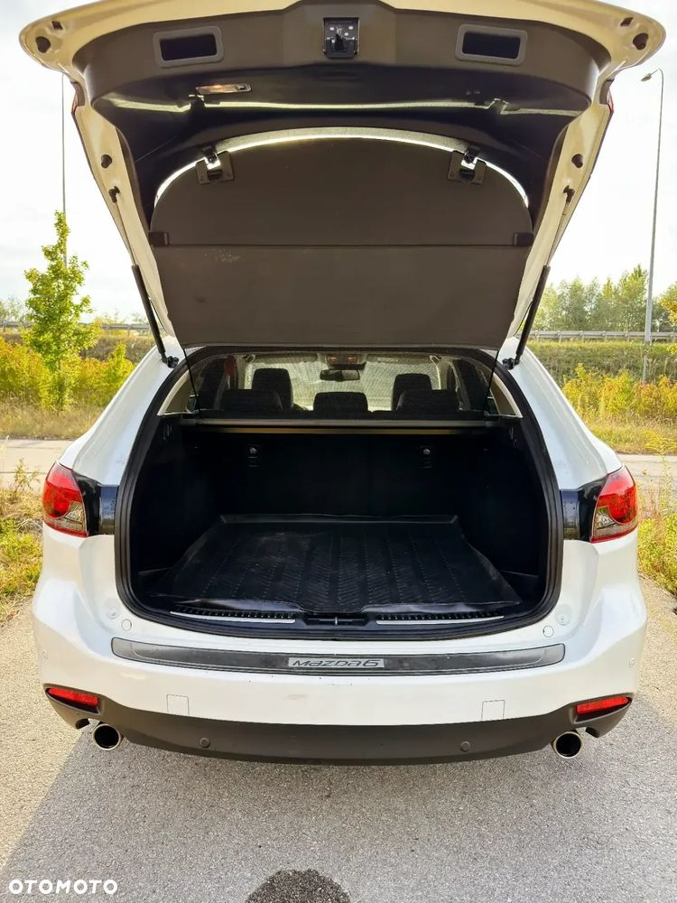
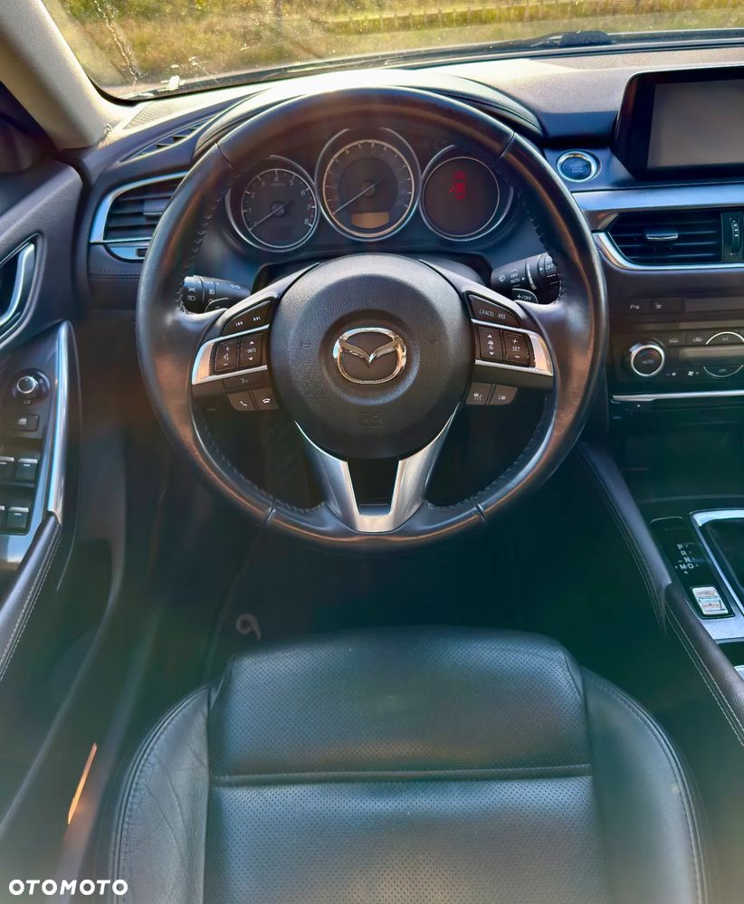

Na sprzedaż Mazda 6 GJ (po pierwszym lifcie) z 2015 roku. Samochód w najbogatszej wersji wyposażenia SkyPassion, z silnikiem benzynowym 2.5l o mocy 192 KM i automatyczną, 6-cio biegową skrzynią biegów.
- Przebieg: 160 000 km
- W moim posiadaniu od kwietnia 2023 r.
Serwis i eksploatacja:
- Olej w silniku wymieniany regularnie co roku
- W 2020 r. przy przebiegu 140 tys. km wykonana statyczna wymiana oleju w skrzyni biegów
Koła i opony:
- Oryginalne felgi 19"
- Opony Michelin CrossClimate 2; DOT 1723 (z 2023 r.), przejechane ok. 15 tys. km
Wyposażenie:
- Android Auto / Apple CarPlay
- nawigacja z mapami Polski i Europy
- system nagłośnienia BOSE
- wyświetlacz przezierny HUD
- klimatyzacja automatyczna dwustrefowa
- elektryczne i podgrzewane fotele (przednie i tylne) z pamięcią w fotelu kierowcy
- elektrycznie sterowane szyby
- elektrycznie sterowane i podgrzewane lusterka
- czujniki parkowania przód i tył z kamerą cofania
- skórzana wielofunkcyjna kierownica
- system I-ELoop
- światła ledowe matrycowe (wykrywanie innych pojazdów i sterowanie strumieniem światła)
- tempomat adaptacyjny i limiter prędkości
- asystent pasa ruchu
- czujnik martwych stref
- sensor deszczu i zmierzchu
- 8 Poduszek powietrznych
- ABS i ESP
- IsoFix
- bezkluczykowy dostęp do auta „Keyless Go”
- akcesoryjna mata ochronna bagażnika
- akcesoryjny immobilizer Omega
- akcesoryjny, demontowalny hak
- oryginalne dokumenty Mazda i komplet kluczyków
Auto w pełni sprawne. Sprzedaję, ponieważ dostałem auto służbowe. Oczywiście wyrażam zgodę na jazdę próbną i sprawdzenie samochodu u mechanika lub diagnosty.
W 2024r. samochód miał drobną szkodę parkingową - zarysowane prawe drzwi tylne. Szkoda zlikwidowana w ASO Mazda Kazoku Luzar Kraków - Wieliczka. Dokumentacja zdjęciowa do wglądu i faktury z naprawy.
Dla zainteresowanych mam raport CarVertical z 2023r. kiedy kupowałem samochód.
 
